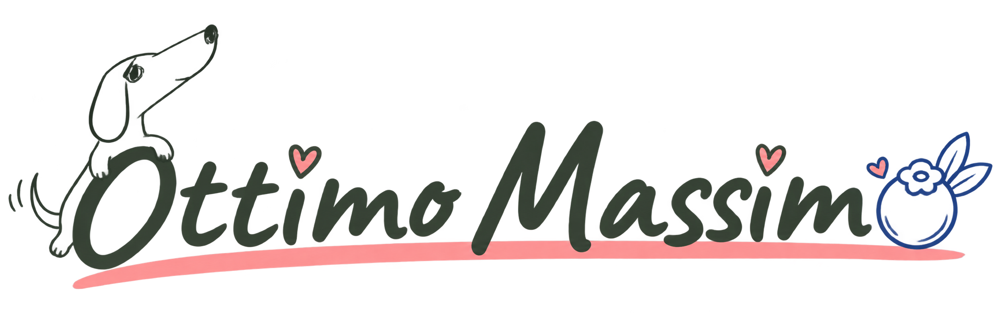
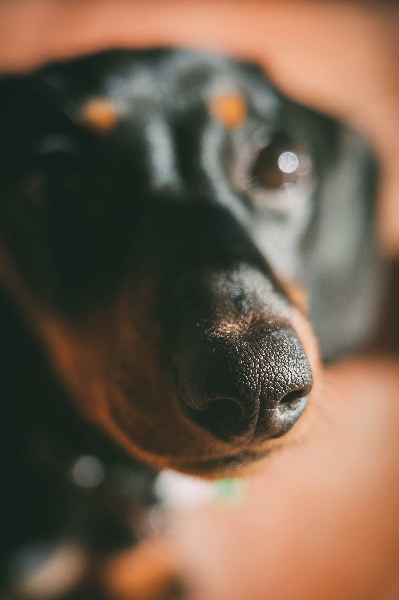
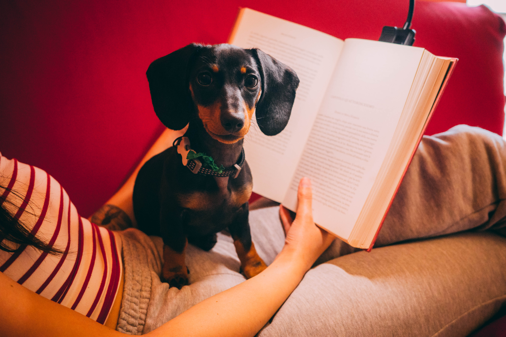

Nessun libro trovato per questo tema.

Ti consiglio libri attraverso frasi che mi sono piaciute.
scrivi qua un tema che ti interessa
Nessun libro trovato per questo tema.
Nel Barone rampante Italo Calvino racconta di Cosimo Piovasco di Rondò, che un giorno sale su un elce e decide di non scenderne più. Sui rami incontra un bassotto randagio, «una specie di delfino con un muso più aguzzo e delle orecchie più ciondoloni di un segugio», e battezza la bestiola con il nome di Ottimo massimo.
Del resto ha «naso di segugio e cuore di leone», una di quelle creature che entrano nella tua vita e decidono, con la loro testarda dolcezza, dove devi guardare e cosa vale la pena annusare.
Dopo aver letto quel libro, decisi che prima o poi avrei preso un bassotto. Del resto che posso farci se alla fine è stata una bassotta?

Si chiama Mirtilla. Nera, focata, con il muso sempre infilato in qualcosa che non la riguarda. È la critica letteraria più severa che conosca ed è capace di attraversare un capitolo intero in pochi minuti, per poi addormentarsi di schianto sulla pagina più emozionante.

Questo diario si chiama come il cane di Calvino, ma è dedicato a lei. I libri che consiglio qui sono quelli che mi sono piaciuti davvero. Non c'è un algoritmo, c'è solo il naso di Mirtilla che annusa, fiuta e scarta.
Non troverai link per comprarli qui. Non è un caso. L'obiettivo di questa pagina è uno solo. Invitarti ad andare in libreria, meglio se indipendente, sfogliare i libri, perderti tra gli scaffali e farti consigliare da chi ci lavora. Se un libro ti incuriosisce ma costa troppo o non lo trovi, chiedilo in prestito a un amico o in biblioteca. Le librerie sono posti fragili e meritano che ci passi davanti prima di comprare un libro con un clic.